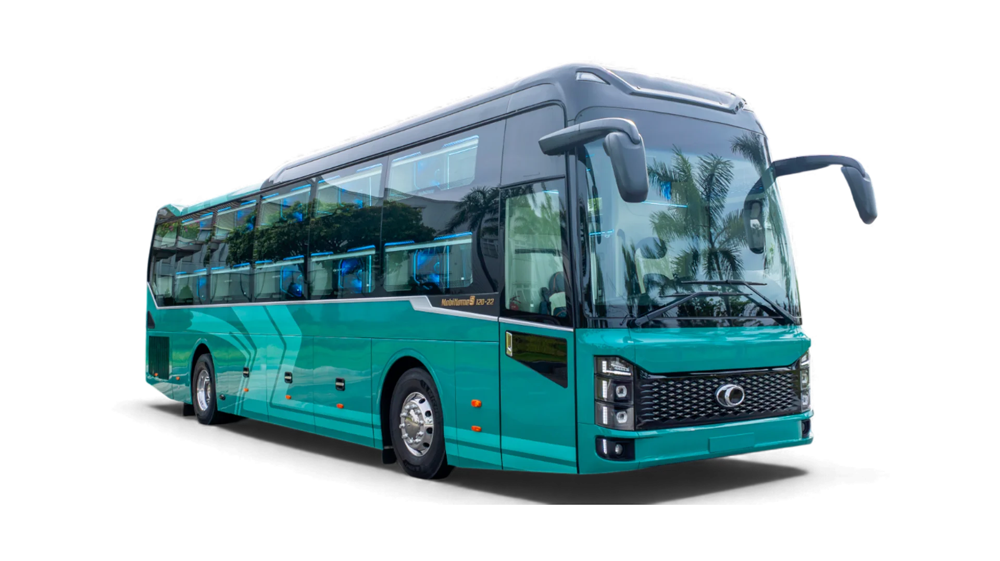
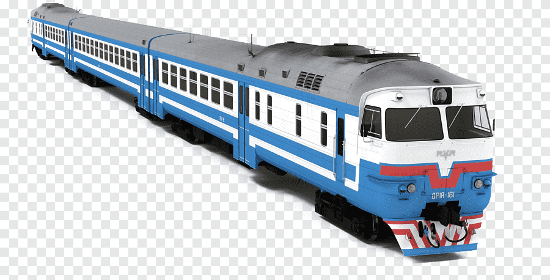

|
|
| Giá vé | Du lịch | Ẩm thực | Văn hóa | Giới thiệu |
Giá vé đến Đà Nẵng
Giá vé máy bay |
- Đà Nẵng là điểm đến du lịch trọng điểm, được các hãng hàng không nội địa (như Vietnam Airlines, Vietjet Air, Bamboo Airways,...) khai thác với tần suất nhiều chuyến trong ngày từ các tỉnh, thành phố lớn.
|
Giá vé bus nằm |
|
Giá vé tàu hỏa |
|
Lưu ý tham khảo cho bạn đọc: Giá vé và lịch trình các chuyến đi (giờ khởi hành, thời gian đến, tuyến đường) có thể biến động tùy thuộc vào từng thời điểm trong năm, chính sách của các đơn vị vận tải và điều kiện thực tế. Vé thường hết rất nhanh vào các dịp cuối tuần, lễ Tết hoặc mùa du lịch cao điểm.Website của chúng tôi chỉ cung cấp thông tin cẩm nang trải nghiệm và không trực tiếp bán vé. Để cập nhật lịch trình mới nhất và đặt vé chính thức, quý khách vui lòng truy cập trực tiếp vào các cổng thông tin của hãng vận chuyển hoặc mua qua các đại lý, ứng dụng đặt vé uy tín.
Contact: tuyetmai121119@gmail.com